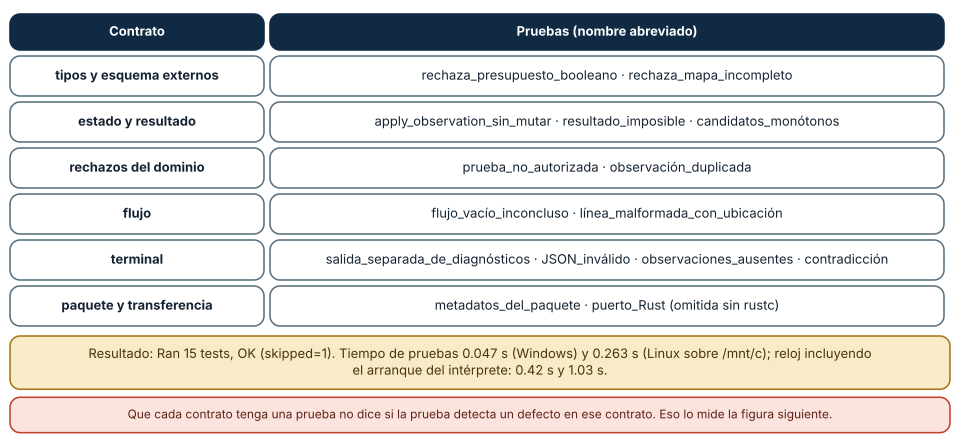
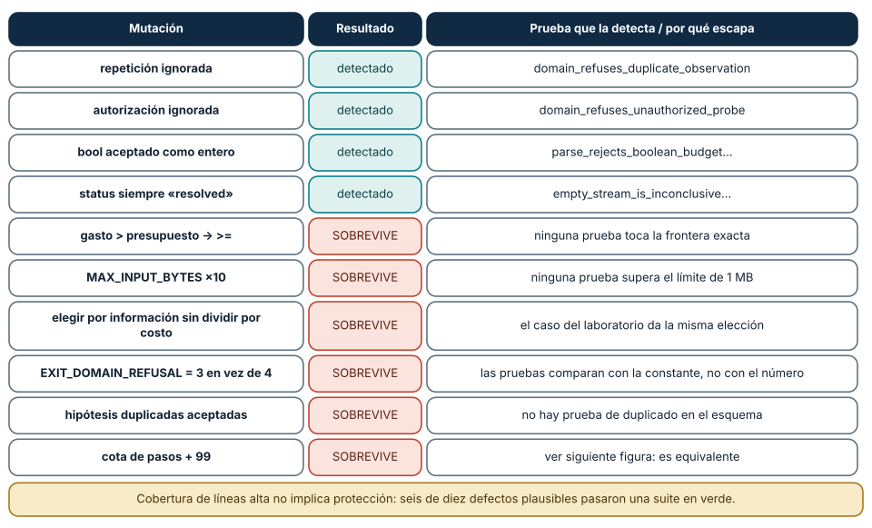
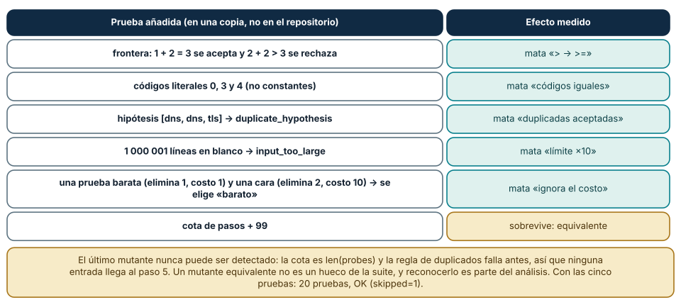

← SE-068 — Módulos, interfaces y separación de responsabilidades · ↑ Parte 05 · 📚 Índice completo · 🌐 Portal · SE-070 — Legibilidad, nombres y mantenimiento básico →
Punto profesional y fundamento pedagógico
Punto profesional. La clase existe para usar ejemplos para descubrir particiones y propiedades antes de fijar implementación.
Por qué aparece aquí. Se sitúa después de Módulos, interfaces y separación de responsabilidades y antes de Legibilidad, nombres y mantenimiento básico: convierte el conocimiento anterior en una decisión observable que la clase siguiente podrá reutilizar. La continuidad se comprueba en el artefacto, no por compartir vocabulario.
Error conceptual que debe corregir. Escribir pruebas que solo confirman casos felices ya conocidos.
Secuencia de aprendizaje. Antes de leer la solución, el estudiante predice el resultado del caso normal y del error conceptual anterior. Luego explica un caso resuelto paso a paso, construye un contraejemplo que cambie la decisión y, sin consultar el texto, reconstruye el mecanismo y lo aplica a una entrada nueva. La secuencia usa predicción, explicación propia, contraste y recuperación. ICAP distingue participación de construcción de conocimiento; How People Learn II exige conectar conocimiento previo, contexto y transferencia; la práctica de recuperación respalda producir de nuevo la explicación tras una demora; y Education for Life and Work exige devolución que explique la causa del error.
Evidencia de aprendizaje. Test-design.md con particiones, límites, propiedad y mutación que la suite detecta. Debe contener predicción previa, observación, explicación causal, contraejemplo, criterio de aceptación y una nota de qué dato haría cambiar la conclusión.
Límite de la conclusión. Una suite finita reduce riesgo; no prueba ausencia de defectos.
Trazabilidad fuente → afirmación
| Fuente primaria u oficial | Afirmación que respalda | Lo que no prueba |
|---|---|---|
Python unittest documentation | define la semántica y los límites de la API de Python utilizada en el experimento | No demuestra por sí sola que el artefacto del estudiante sea correcto. |
| SWEBOK Guide v4.0a | sitúa la decisión dentro de construcción, diseño, pruebas y práctica profesional de ingeniería de software | No demuestra por sí sola que el artefacto del estudiante sea correcto. |
| Python Tutorial | define la semántica y los límites de la API de Python utilizada en el experimento | No demuestra por sí sola que el artefacto del estudiante sea correcto. |
Antes de empezar
Esta clase construye la CLI diagnóstica, implementación incremental de la especificación del modelo de decisión diagnóstica. Recupera SE-068 y convierte una regla ya modelada en comportamiento ejecutable o comprobable. Trabaja en cambios pequeños: predicción, código, ejecución, evidencia y explicación. Ejecutar sin poder explicar el resultado no completa la práctica.
Prerrequisitos
- Python 3.11 o posterior disponible como
pythonopython3; registra la versión real. - Terminal, editor de texto y Git; no se requieren paquetes externos.
- Comprender el contrato del modelo de decisión diagnóstica: entradas, resultados, errores e invariantes.
Problema auténtico
La CLI diagnóstica se prueba al final con una entrada feliz. Duplicados, empate, vacío y errores de archivo reaparecen después de refactorizar. Las pruebas tempranas deben derivarse del contrato y dar retroalimentación sobre la interfaz, no congelar detalles internos.
Objetivos observables
Al terminar podrás explicar el mecanismo del lenguaje, predecir una ejecución, implementar un caso normal y sus fronteras, diagnosticar un fallo controlado, proteger el comportamiento con evidencia y separar lo transferible de lo específico de Python.
Mapa conceptual
Ver la notación fuente del diagrama
flowchart LR
S[Especificación el modelo de decisión diagnóstica] --> V[Valores y contratos]
V --> C[Control y transformación]
C --> E[Efectos en la frontera]
E --> O[Salida observable]
O --> T[Prueba y diagnóstico]
T -->|defecto o caso nuevo| SEl código no reemplaza la especificación: la materializa bajo reglas concretas del lenguaje y del entorno. La pregunta de esta clase es: ¿Qué ejemplo cambia una decisión de diseño y qué defecto evitará que regrese?
Temas y por qué importan
| Lente | Pregunta | Evidencia |
|---|---|---|
| valor | ¿qué representa y qué tipo tiene? | ejemplo inspeccionable |
| control | ¿qué camino o repetición ocurre? | traza de estados |
| contrato | ¿qué acepta, retorna y rechaza? | casos frontera |
| efecto | ¿qué cambia fuera del cálculo? | archivo o stream controlado |
| mantenimiento | ¿cómo se detecta una regresión? | prueba y diff enfocado |
Conceptos y decisiones
1. Ejemplo como especificación
Un ejemplo nombra entrada, acción y resultado observable. Primero se seleccionan particiones y fronteras; después se codifica. Un ejemplo aislado no define todo el dominio, pero varios ejemplos pueden revelar vocabulario y una interfaz incómoda.
2. Arrange–Act–Assert
Arrange prepara el estado mínimo; Act ejecuta una sola conducta; Assert comprueba resultado relevante. Mezclar varias acciones y docenas de asserts dificulta localizar intención. Los nombres de prueba expresan condición y consecuencia.
3. Pruebas de valor, error y efecto
El núcleo se prueba por retorno y excepciones de contrato. Adaptadores verifican archivos temporales, stdout/stderr y códigos de salida. Simular todo produce confianza ficticia; tocar red real vuelve la prueba frágil. Se elige la frontera adecuada.
4. Dobles y determinismo
Un fake en memoria o función inyectada controla reloj e I/O. El doble debe respetar el contrato relevante, no duplicar implementación. Semillas, tiempo y orden se fijan cuando afectan el resultado. Una prueba flaky es una señal a diagnosticar, no a reintentar indefinidamente.
5. Prueba de regresión
Al corregir un defecto se añade primero el caso que falla, se verifica rojo por la razón correcta, se corrige y se conserva. Cobertura indica ejecución, no calidad de oráculos. Se priorizan decisiones y riesgos.
Qué protege cada prueba: el mapa de contratos
La suite del laboratorio tiene 15 pruebas que, ejecutadas con python -m unittest discover, dieron Ran 15 tests … OK (skipped=1): catorce aprobadas y la del puerto Rust omitida porque rustc no estaba instalado en ninguno de los dos sistemas. Las pruebas ejecutaron en 0.047 s (Windows) y 0.263 s (Linux sobre un disco montado); incluido el arranque del intérprete, 0.42 s y 1.03 s. Una suite que se ejecuta en una fracción de segundo se ejecuta antes de cada cambio, que es la propiedad que la hace útil.
Cada prueba protege un contrato concreto. test_parse_rejects_boolean_budget… fija la regla de tipos externos; test_parse_rejects_incomplete_outcome_map, el esquema; test_apply_observation_returns_new_state_without_mutating_input, la inmutabilidad; test_domain_refuses_unauthorized_probe y …duplicate_observation, los rechazos del dominio; test_stream_reports_malformed_line_with_location, el JSONL; cuatro pruebas de CLI, el contrato de salida; test_package_metadata…, el paquete. El nombre de cada prueba es una frase del contrato, y por eso un fallo se lee como un diagnóstico: «el dominio dejó de rechazar pruebas no autorizadas».
La estructura de cada prueba es Arrange–Act–Assert: preparar los datos (una especificación y un estado), ejecutar una sola acción (apply_observation) y verificar el resultado. Las pruebas del laboratorio son deterministas: no usan reloj, azar, red ni archivos compartidos (las de CLI usan archivos temporales propios), y por eso se ejecutan igual en cualquier plataforma. Un doble de prueba se justifica cuando una dependencia rompería ese determinismo; aquí main recibe stdout y stderr como parámetros y la prueba pasa io.StringIO.

Cómo leer la figura. Cada fila es un contrato y la columna derecha lista las pruebas que lo cubren. Las dos notas inferiores dan el resultado medido y la limitación de este mapa. Dónde deja de valer: el mapa dice qué prueba apunta a qué contrato, no cuán bien lo protege. Un contrato con una prueba puede seguir sin protección real, como muestra la siguiente sección.
Mutaciones: ¿detecta la suite un defecto?
Una prueba que nunca falla no demuestra nada. Una forma de medir si detecta defectos es introducir uno a propósito (una mutación) y comprobar si la suite lo nota. Se aplicó una mutación a la vez sobre una copia del laboratorio y se ejecutó la suite completa: de diez cambios plausibles, cuatro fueron detectados y seis sobrevivieron con la suite en verde. Detectados: ignorar la repetición de pruebas, ignorar la autorización, aceptar bool como entero y devolver siempre status="resolved". Sobrevivieron: cambiar > por >= en el chequeo del presupuesto, multiplicar por diez el límite de 1 MB, ignorar el costo al elegir la próxima prueba, hacer iguales los códigos de salida 3 y 4, aceptar hipótesis duplicadas y relajar la cota de pasos.
Los sobrevivientes son informativos. El cambio de > a >= desplaza la frontera del presupuesto: un gasto exactamente igual al presupuesto pasaría a rechazarse, y ninguna prueba toca esa frontera. El de códigos de salida sobrevive porque las pruebas comparan con la constante simbólica (EXIT_DOMAIN_REFUSAL) y no con el número documentado en el README: si cambia el valor, el código y la prueba cambian juntos. El límite de 1 MB nunca se supera en las pruebas. Todos son defectos que un desarrollador podría introducir sin que nadie lo vea, y el informe de cobertura de líneas no los habría señalado: las líneas se ejecutan, pero no se verifican sus bordes.
La conclusión no es que la suite esté mal, sino que «15 pruebas en verde» y «protección de los contratos» son afirmaciones distintas. Medir con mutaciones es una forma barata de poner a prueba la segunda.

Cómo leer la figura. Las filas verdes son mutaciones que la suite detectó; las rojas, las que pasaron sin que ninguna prueba fallara. La tercera columna dice qué prueba atrapó el cambio o por qué se escapó. Dónde deja de valer: son diez mutaciones elegidas a mano, no una herramienta de mutación exhaustiva (como mutmut). El resultado cuenta mutaciones concretas, no un «porcentaje de calidad» de la suite.
Cerrar los huecos: pruebas nuevas y mutantes equivalentes
Para cada sobreviviente se escribió una prueba que lo atrapa y se comprobó que lo hacía, en una copia del laboratorio (no se modificó el repositorio). La frontera del presupuesto se cubre con dos casos: con budget=3 y 1 gastado, la prueba handshake (costo 2) se acepta (1 + 2 = 3), y con 2 gastados se rechaza (2 + 2 > 3) con budget_exceeded. Los códigos de salida se fijan con números literales 0, 3 y 4 en tres escenarios. Las hipótesis duplicadas se prueban con ["dns", "dns", "tls"]. El límite de tamaño se prueba con 1 000 001 líneas en blanco, que produce input_too_large. Y la elección por costo se prueba con dos pruebas (una elimina 1 hipótesis con costo 1 y otra elimina 2 con costo 10) y se verifica que se elige la barata: 1.0 por unidad de costo frente a 0.2. Con las cinco pruebas, la suite pasó a 20 pruebas, OK (skipped=1), y cinco de los seis sobrevivientes fueron detectados.
El sexto, la cota de pasos, no se detecta con ninguna prueba y no es un hueco: es un mutante equivalente. La cota vale len(probes) y la regla de repetición falla en cuanto se repite una prueba, de modo que ninguna entrada válida llega al paso len(probes) + 1; relajar la cota no cambia el comportamiento observable. Reconocer un mutante equivalente es parte del análisis, y la acción correcta es no escribir una prueba artificial. La cota queda como defensa en profundidad, no como regla observable.
Una prueba de regresión nace de un defecto observado: se escribe primero la entrada que lo reproduce y se confirma que falla, después se corrige. La prueba que falla antes de la corrección es la que garantiza que no se vuelve a introducir.

Cómo leer la figura. La columna izquierda describe la prueba añadida; la derecha, qué mutante mata. La última fila (en dorado) es el mutante que no se puede detectar y por qué. Dónde deja de valer: las cinco pruebas se verificaron en una copia temporal y no forman parte del laboratorio publicado (que conserva quince pruebas); son un ejercicio resuelto, no un cambio al repositorio. Detectar un mutante no prueba la ausencia de otros defectos.
Definiciones de trabajo
- oráculo: criterio que decide el resultado esperado.
- fixture: estado preparado para una prueba.
- doble: sustituto controlado de un colaborador.
- regresión: defecto corregido que reaparece.
- flaky: prueba con resultado no determinista sin cambio relevante.
Estas definiciones describen el uso concreto en la CLI diagnóstica. Cuando Python permita varias conductas, el contrato del programa elige una y la hace visible con validación y pruebas.
Ejemplo mínimo
import unittest
from diagnostic_cli.domain import choose_next
class ChooseNextTests(unittest.TestCase):
def test_returns_none_when_no_test_is_authorized(self):
tests = [{"id": "dns", "cost": 1}]
self.assertIsNone(choose_next([], tests, set()))
if __name__ == "__main__":
unittest.main()Escribe casos para lista vacía, una prueba autorizada, dos con distinto costo y empate por ID. Ejecuta primero contra una implementación incompleta y confirma que al menos uno falla por la regla esperada.
Ejecuta el fragmento en un archivo, no solo en una conversación interactiva. Conserva comando, versión, salida y explicación de cada línea relevante.
Ejemplo profesional
La suite de la CLI diagnóstica separa pruebas de dominio y CLI. Usa TemporaryDirectory, captura stdout/stderr y ejecuta la CLI como consumidor. Cada bug recibe una regresión; las pruebas no afirman conectividad real no simulada.
El criterio profesional es que el comportamiento pueda ser consumido, diagnosticado y cambiado sin depender de conocimiento oral ni de estado oculto.
Práctica guiada
- deriva particiones del contrato.
- nombra comportamiento.
- escribe Arrange–Act–Assert.
- observa rojo antes de corregir.
- refactoriza conservando verde.
- ejecuta
python -m unittest -vcuando existan pruebas y registra el resultado exacto.
Ejercicios
- Contratos: escribe en una frase cada contrato de tu función y una prueba con nombre que la repita; verifica que el nombre se lea como un diagnóstico.
- Mutación manual: aplica tres mutaciones a tu código y registra cuáles detecta tu suite; para cada sobreviviente, escribe la prueba.
- Equivalente: encuentra una mutación que ningún dato puede distinguir y explica por qué no se prueba.
- Regresión: reproduce un defecto con una entrada, escribe la prueba que falla y corrige; conserva la prueba.
Reto verificable
Entrega un cambio que incluya comportamiento, caso normal, caso límite, fallo controlado y explicación. Otra persona debe poder ejecutar los comandos desde un checkout limpio y relacionar cada salida con una regla del modelo de decisión diagnóstica.
Demostración guiada
- Escribe la entrada y la salida esperada antes del código.
- Ejecuta el caso mínimo y observa valores intermedios sin dejar prints permanentes en el núcleo.
- Añade el caso frontera que obligue a decidir, no solo a teclear.
- Introduce el fallo descrito abajo y confirma que la evidencia lo detecta.
- Corrige, ejecuta toda la suite y revisa el diff por efectos no deseados.
Preguntas frecuentes
¿Cuántas pruebas son suficientes?
No hay una cifra; importa si cada contrato y su frontera tienen una prueba que fallaría ante un defecto plausible. La mutación es una forma de comprobarlo.
¿Cobertura de líneas del 100% significa suite buena?
No. Mide qué líneas se ejecutaron, no qué se verificó. Los seis mutantes que sobrevivieron estaban todos en líneas ejecutadas.
¿Pruebas con unittest o pytest?
El laboratorio usa unittest de la biblioteca estándar para no instalar nada; pytest ofrece una sintaxis más corta. Lo que cuenta es el contrato que se verifica.
¿Cuándo usar un doble (mock)?
Cuando una dependencia rompe el determinismo (reloj, red, azar). Si basta pasar un StringIO o un valor, el doble sobra y acopla la prueba a la implementación.
Fallo controlado y diagnóstico
Aplica en una copia del laboratorio la mutación state.spent + probe.cost > spec.budget → >=. Ejecuta la suite: todo pasa. Escribe la prueba de frontera (gasto + costo exactamente igual al presupuesto debe aceptarse) y comprueba que falla con la mutación y pasa con el código original. Repite con EXIT_DOMAIN_REFUSAL = 4 → 3: la suite sigue verde porque compara constantes; escribe la prueba con el número literal. Registra para cada mutante la causa del escape, la prueba que lo cierra y si es equivalente. No cambies la expectativa de una prueba existente para «hacerla pasar».
Errores comunes y cómo corregirlos
| Síntoma | Causa | Corrección |
|---|---|---|
| la suite pasa pero un defecto llegó a producción | las pruebas no verifican las fronteras | pruebas en ambos lados de cada límite y revisión con mutaciones |
| la prueba falla al refactorizar sin cambio de comportamiento | prueba acoplada a detalles internos | probar la interfaz pública y los resultados observables |
| la prueba pasa a veces | depende de reloj, orden de ejecución o estado compartido | preparar el estado en cada prueba y eliminar la fuente de no determinismo |
| se «arregla» una prueba que falla cambiando la expectativa | se acepta el defecto en lugar de corregirlo | decidir primero si cambió la regla o el código |
| solo se prueba el caso feliz | el ejemplo se usa como especificación | casos de error, vacío y frontera derivados del contrato |
Entorno y archivos clave
work/SE-069/
├── diagnostic_cli/
│ ├── __init__.py
│ ├── domain.py
│ ├── cli.py
│ └── __main__.py
├── tests/
│ └── test_diagnostic_cli.py
└── README.mdNo instales dependencias para resolver lo que cubre la biblioteca estándar. README.md conserva versión, comandos, entradas, salida, limpieza y límites. Los fragmentos son pedagógicos; intégralos solo después de entender su contrato.
Laboratorio integrado de la Parte 05
Audita las quince pruebas de labs/part-05-diagnostic-cli y clasifícalas como ejemplo, frontera, error, propiedad, integración o consumidor. Antes de corregir nada, agrega una regresión que falle por la razón prevista. Explica también qué no probarías: atributos privados o el orden interno de guard clauses no merecen fijarse si el contrato observable se conserva. La cobertura se argumenta por riesgos y particiones, no solo por líneas ejecutadas.
Seguridad, ética y accesibilidad
- usa fixtures sintéticos y no incluyas tokens, rutas personales ni incidentes reales;
- limita tamaño, profundidad y tiempo de entradas no confiables;
- separa stdout parseable de stderr y redacta datos sensibles;
- ofrece mensajes accionables y no dependas solo de color;
- preserva autorización como regla del núcleo, no como checkbox de UI;
- no uses
eval,execni construcción de shell con entrada externa.
Puente hacia el trabajo con agentes
Las pruebas son la evidencia con la que se confía en el código que generó un agente. La lección es la de la figura: una suite en verde puede no detectar seis de diez defectos plausibles, y el código generado tiende a satisfacer las pruebas existentes más que los contratos que no están escritos. Tres controles se derivan: ante un cambio de un agente, la revisión pide pruebas en las fronteras (no solo el caso feliz); se mutan algunos cambios a mano o con herramienta para comprobar que la suite los detecta; y las pruebas de contrato (códigos de salida literales, esquemas) viven fuera del código que el agente puede reescribir libremente. Un agente que modifica el código y la prueba en el mismo cambio no ofrece evidencia independiente.
Transferencia
Reimplementa el contrato, no la sintaxis. Identifica cómo el segundo lenguaje representa ausencia, error, mutabilidad y módulos. Conserva fixtures y resultados públicos para detectar una diferencia semántica.
Evaluación y evidencia
| Criterio | Evidencia para aprobar |
|---|---|
| comprensión | predicción y explicación de ejecución |
| comportamiento | normal, límite e inválido según contrato |
| diseño | cálculo separado de efectos y dependencias visibles |
| diagnóstico | fallo mínimo, causa y regresión |
| reproducibilidad | versión, comandos y salidas desde checkout limpio |
Fuentes
- Python
unittestdocumentation — define la semántica y los límites de la API de Python utilizada en el experimento. - SWEBOK Guide v4.0a — sitúa la decisión dentro de construcción, diseño, pruebas y práctica profesional de ingeniería de software.
- Python Tutorial — define la semántica y los límites de la API de Python utilizada en el experimento.
- unittest.mock: dobles de prueba y cuándo introducen acoplamiento.
- doctest — Test interactive Python examples: ejemplos ejecutables como documentación y prueba.
- tempfile: archivos y directorios temporales para pruebas aisladas.
- timeit — Measure execution time of small code snippets: medición reproducible de fragmentos pequeños.
La documentación oficial define el lenguaje y la biblioteca; no demuestra que la CLI diagnóstica cumpla su dominio. Esa evidencia vive en contratos, pruebas y ejecución reproducible.
Límites y siguiente paso
Pruebas no demuestran ausencia de defectos ni sustituyen revisión y análisis. La próxima clase mejora legibilidad sin cambiar comportamiento protegido.
Lo que no se midió. Las diez mutaciones se eligieron a mano y no se usó una herramienta de mutación; las cinco pruebas añadidas se verificaron en una copia temporal y no se publicaron en el laboratorio. La prueba de Rust quedó omitida.
Glosario
- oráculo: criterio que decide el resultado esperado.
- fixture: estado preparado para una prueba.
- doble: sustituto controlado de un colaborador.
- regresión: defecto corregido que reaparece.
- flaky: prueba con resultado no determinista sin cambio relevante.
← SE-068 — Módulos, interfaces y separación de responsabilidades · ↑ Parte 05 · 📚 Índice completo · 🌐 Portal · SE-070 — Legibilidad, nombres y mantenimiento básico →